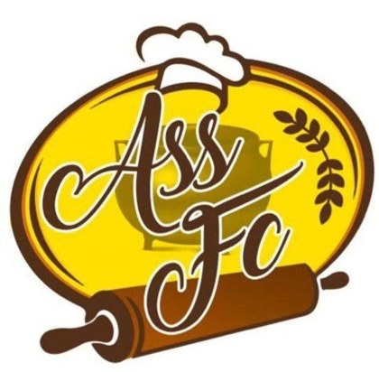
Boulangerie pâtisserie artisanale. Dès 6 h, les pains spéciaux et les viennoiseries du matin vous attendent.
À Ravine du Pont, Apréciali pétrit, façonne et cuit chaque matin : baguettes, pains spéciaux, viennoiseries « classiques artisanales » et, vers midi, tout un rayon de salé fait maison.
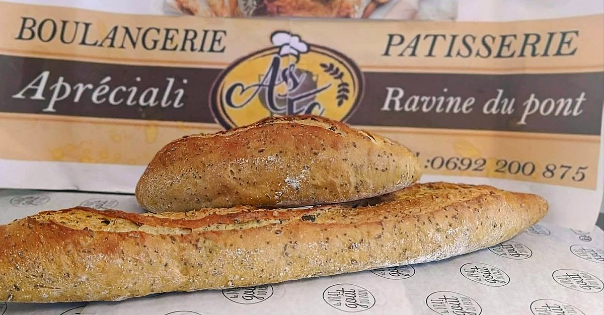
« Bon réveil et belle matinée » : voici ce que la boulangerie annonçait le samedi 7 novembre.
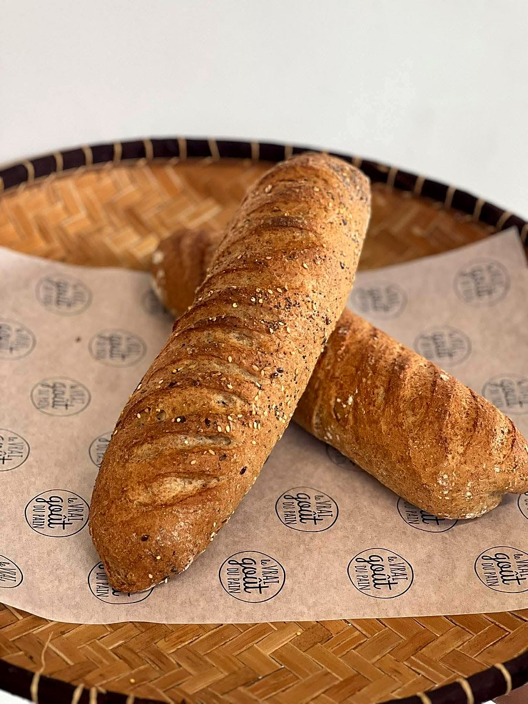
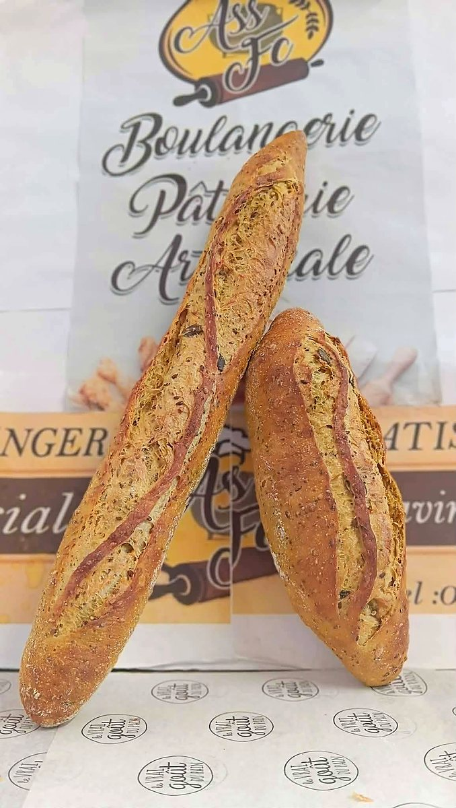
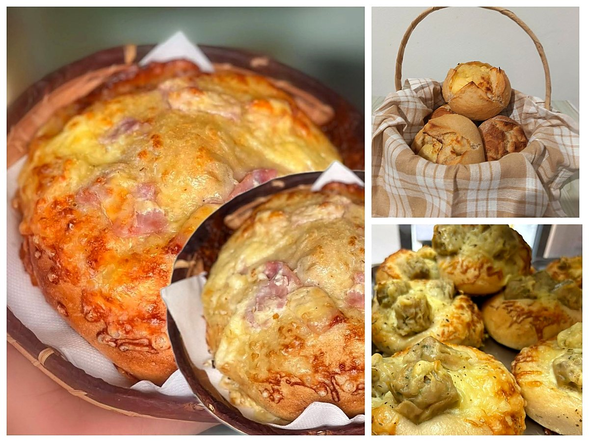
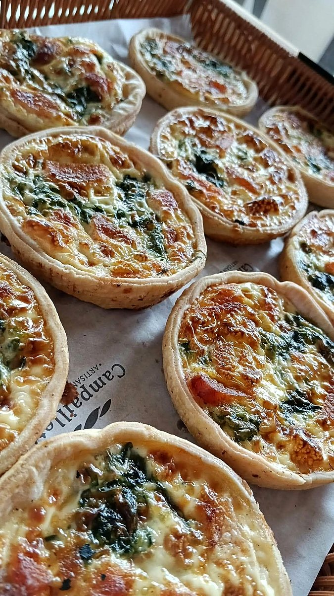
← glissez pour voir les photos →
Chaque matin, la page annonce les garnitures du jour. Quelques exemples publiés début novembre :
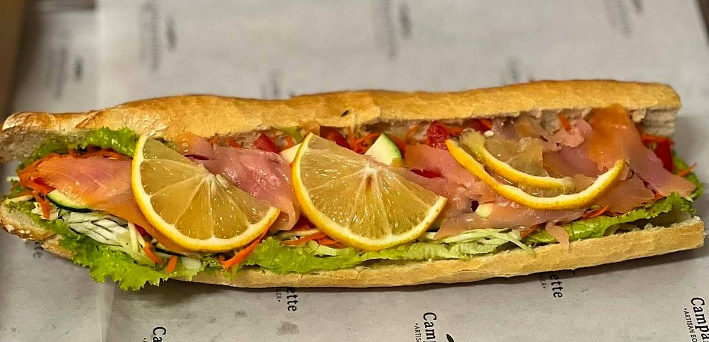
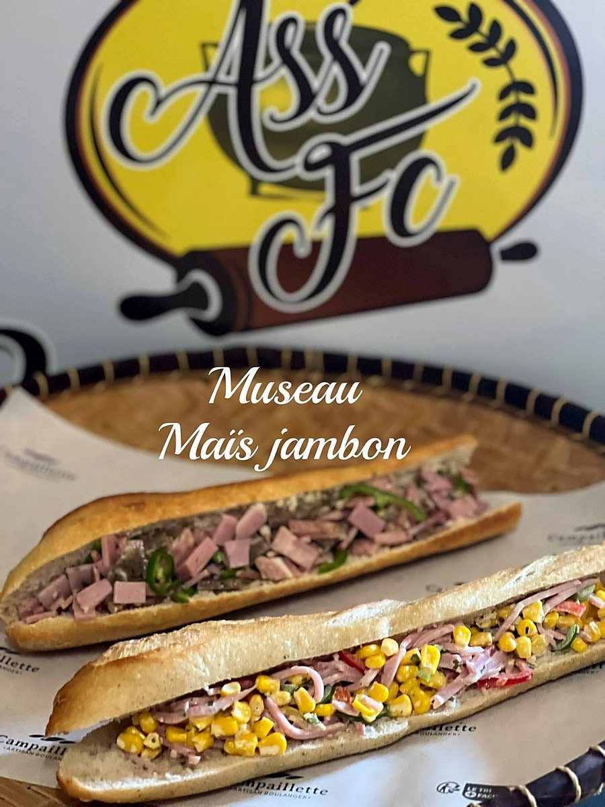
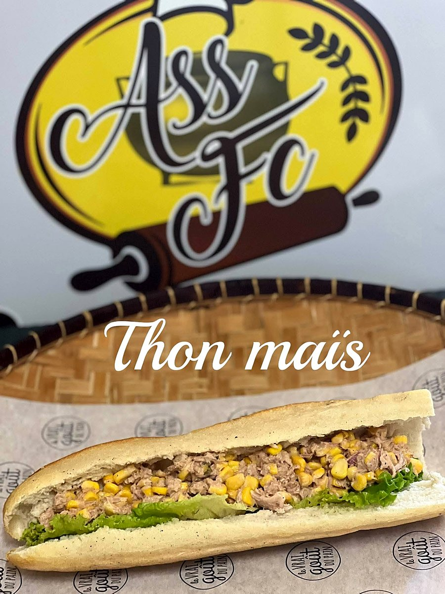
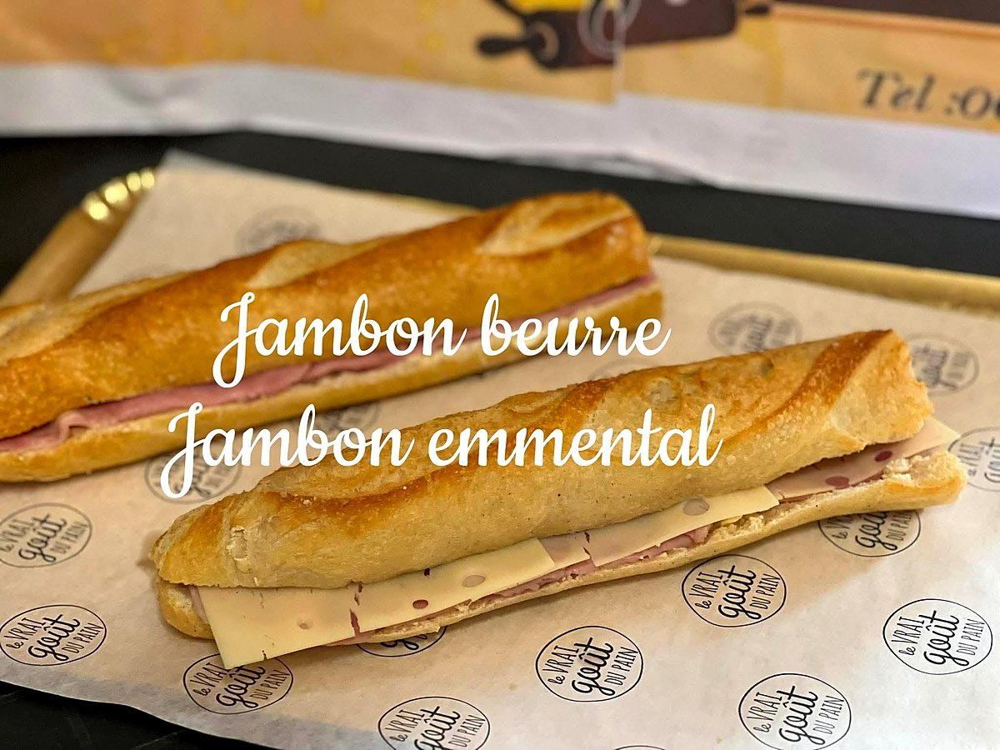
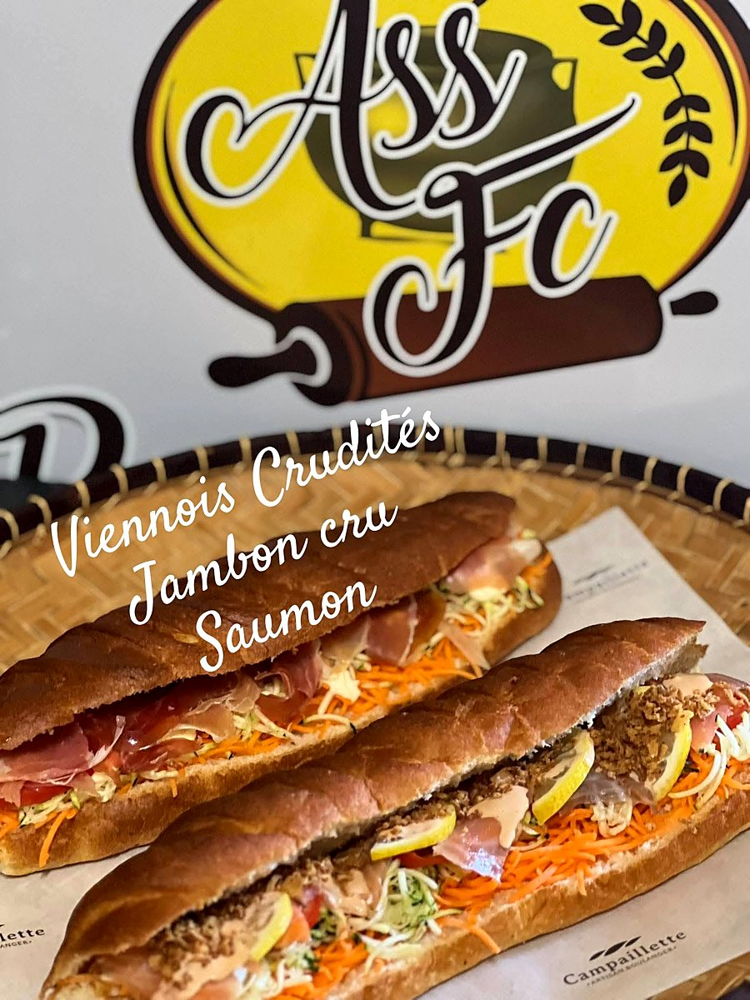
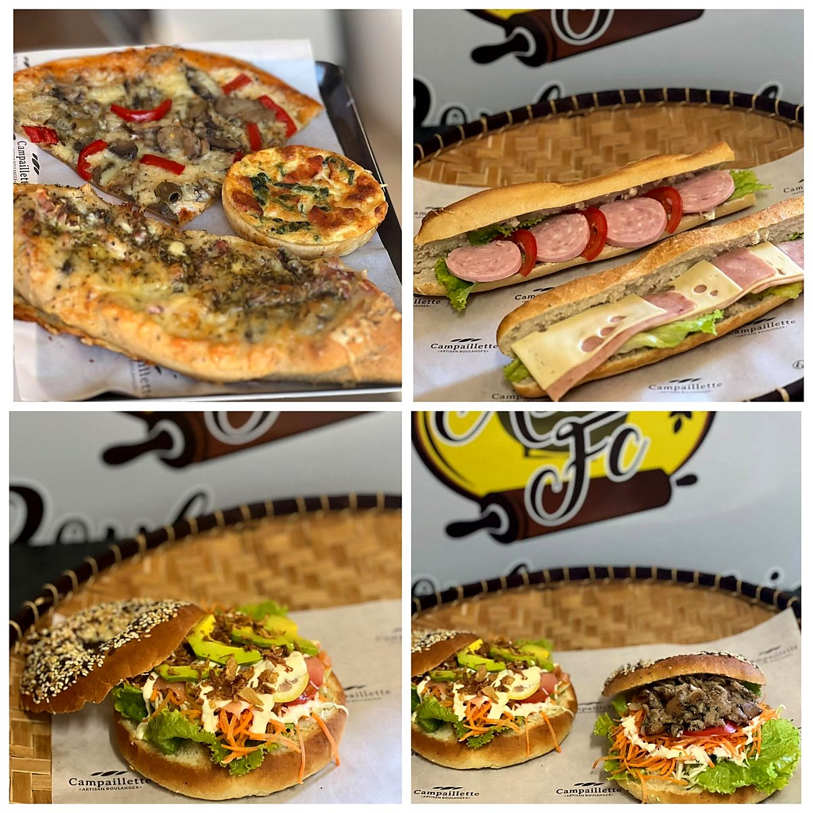
Bon appétit ! Le choix change selon les jours : la page Facebook donne le menu du matin.
« L'effervescence de la fin d'année » approche : pensez à commander vos pains et gourmandises pour les repas de famille.
Quantités et délais à convenir directement avec la boulangerie.
| Mardi → vendredi | 6 h – 18 h |
| Samedi | 6 h – 13 h |
| Dimanche & jours fériés | 6 h – 12 h |
| Lundi | jour de repos |
Ravine du Pont, Petite-Île (97429)